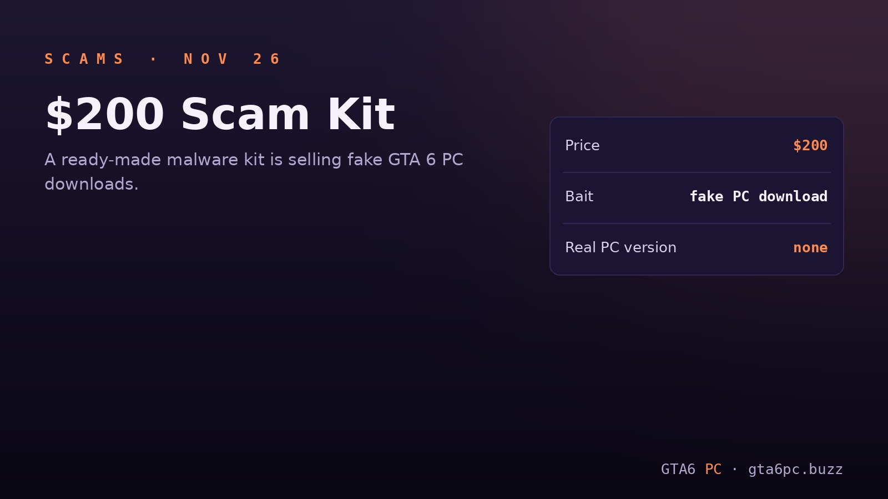

What is the $200 GTA 6 PC scam kit?
Someone is selling the GTA 6 PC scam as a ready-made product. NordVPN's threat intelligence team found a kit listed for $200 on the dark web, days before the game's console launch, that bundles everything a criminal needs to catch players searching for a PC version: a fake key generator that steals browser sessions, a crypto wallet drainer, a hidden miner and a bot that spams fake download links through YouTube Shorts. It is not one scam site. It is a toolkit for making scam sites, and researchers have already documented the lures it feeds.

What NordVPN found
NordVPN's threat intelligence team discovered the package on November 16, 2026, three days before GTA 6 launched on consoles. It was listed for $200, payable in Bitcoin or Tether, on the dark web. NordVPN chief technology officer Marijus Briedis told TechRadar that the packaged approach makes these scams accessible to criminals without advanced programming skills: someone has put the whole operation in a box and is selling it to anyone with $200.
The discovery does not establish how many people bought the kit or how many devices have been infected. What it establishes is the business model. Before this, a criminal who wanted to run a GTA 6 PC scam had to build the malware and the promotion. Now the kit supplies both, and the buyer only has to find victims. That is why it matters more than any single fake download site, and why it is worth its own warning rather than a line in our fake downloads guide.
What is inside the kit
According to NordVPN as reported by TechRepublic, MakeUseOf and Beebom, the kit has four parts. Each one does a different job, and together they turn one click into several kinds of theft.
| Component | What it does |
|---|---|
| GTA6 Keygen.exe | Fake key generator that steals browser session cookies, letting an attacker into accounts that are already signed in |
| Crypto wallet drainer | Targets wallets on Ethereum, BNB Smart Chain, Solana and Polygon, claiming $100 to $500 per drained wallet |
| Hidden XMRig miner | Secretly uses the infected computer's processor to mine cryptocurrency |
| YouTube Shorts bot | Automatically promotes fake GTA 6 download links to find new victims |
The session cookie theft is the part most victims miss. A stolen session cookie lets an attacker into an account that is already signed in, so the password never changes and nothing looks wrong until the account is used. The wallet drainer works the same way in reverse: it watches the clipboard and swaps copied crypto addresses so payments go to the attacker. The miner is the quietest part, slowing the machine while it earns money for someone else.
How the kit reaches victims
The Shorts bot is the promotion arm. It posts short videos that push fake download links, which is a natural fit for a game whose audience lives on short video. But the kit is only one supplier. Security researchers have documented several lures working the same search demand, and they show how varied the traps are.
Bitdefender reported on November 20, 2026 that a fake cloud player, supposedly streaming GTA 6 from a console to Windows, shows a ClickFix prompt that tricks visitors into pressing Win+R and pasting a PowerShell command. That command downloads a script that unpacks GTA6Cloud.exe, which plays the official trailer as a decoy while a Rust-based infostealer harvests browser passwords, session cookies, Steam and Discord logins, crypto wallets, screenshots and API keys. Cynet reported on November 13 that a Google Colab notebook promising a GTA 6 exe led to a page called Windows Software Hub, and the file was a heavily obfuscated WARDEN stealer that takes passwords, cookies, Steam and Roblox credentials and wallet information. Huntress analysed 100 GB ISO files in September 2026 and found a fake installer, several remote access tools, an infostealer, ransomware used as a wiper, and a web browser. Netcraft found a store on November 3 selling supposed game keys for $199, including a key it claimed would work on PC.
These are different campaigns from different researchers, not one operation. What they share is the bait: a PC version of GTA 6 that does not exist, offered to people who want it badly enough to click.
Why this scam works so well
Three things line up for the criminals. First, there is no official PC version, so every search for one lands on unofficial material. Second, the game is the biggest launch in years, with a reported $2.36 billion and 24.58 million copies in its first 24 hours, so the audience is enormous. Third, the leaked Xbox build and the fan port projects are real news, which makes a claim of an early PC build sound plausible to someone who has only seen headlines. Our fake GTA 6 videos guide covers the same trick in video form.
The kit removes the last barrier, skill. A buyer does not need to write malware, because the kit includes it. They do not need to find victims, because the Shorts bot promotes the links. They only need $200 and a payment in Bitcoin or Tether. That is the shift NordVPN is warning about: scams as a product, sold to anyone.
What to do if you ran one of these files
If you downloaded a suspicious file but have not opened it, delete it and run a security scan. If you already ran it, treat the PC as compromised. Disconnect from the internet, then change your passwords from a clean device, starting with email, Steam and Discord, because the stealers target session cookies and those accounts first. Revoke active sessions where the service allows it, check your crypto wallets and any exchange accounts, and turn on two-factor authentication everywhere it is offered.
Do not trust a scan alone if the file was a Rust infostealer or a remote access tool, because those are built to survive reboots and hide from sandboxes. If anything still looks wrong after a full scan, a clean reinstall of Windows is the safe option. And if you entered a seed phrase or sent crypto to an address from a copied clipboard, assume the funds are gone and report the theft to the exchange and to the police, because drained wallets are rarely recovered.
The rule that covers all of it is the one this site repeats in every article: there is no official GTA 6 PC download today. Any file, installer, keygen, cloud player or store that offers one is fake, and the only thing it installs is malware. Wait for Rockstar to announce the PC version, and until then play on a console or stream from one you own.
Quick answers
What is the $200 GTA 6 PC scam kit?
It is a ready-made malware package found by NordVPN's threat intelligence team on November 16, 2026, listed for $200 in Bitcoin or Tether on the dark web. It bundles a fake GTA6 Keygen.exe that steals browser session cookies, a crypto wallet drainer, a hidden XMRig miner and a YouTube Shorts bot that promotes fake download links. It is sold to criminals who do not need coding skills to run the scam.
What does the wallet drainer steal?
According to NordVPN as reported by TechRepublic and MakeUseOf, it targets wallets on Ethereum, BNB Smart Chain, Solana and Polygon, and the listing claims $100 to $500 per drained wallet. The keygen component steals browser session cookies, which can let an attacker into accounts that are already signed in without needing the password.
How do the fake GTA 6 downloads reach victims?
The kit includes a YouTube Shorts bot that spreads fake download links. Researchers have also documented separate lures: a fake cloud player that tricks victims into running a PowerShell command through Win+R, a Google Colab notebook promising a GTA 6 exe, 100 GB ISO files, and a store selling supposed game keys for $199.
Is there any real GTA 6 PC download?
No. Rockstar has not announced a PC version or a PC release date, and the game is available only on PlayStation 5 and Xbox Series X|S. Any file, installer, keygen or download page claiming to install GTA 6 on PC is fake.
What should I do if I ran a suspicious GTA 6 file?
Disconnect from the internet, delete the file without opening it again, and run a full security scan. Then change your passwords and revoke active sessions from a clean device, starting with email, Steam and Discord, check your crypto wallets and enable two-factor authentication. Treat the PC as compromised until the scan is clean.
Last updated . We update this page when Rockstar announces anything new.